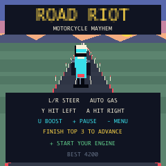
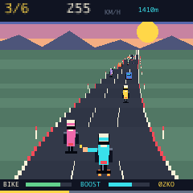
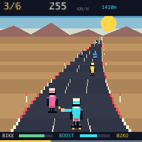
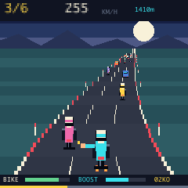
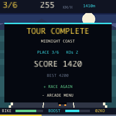

Start your engine
Accelerate automatically after the countdown and use the whole road to find a way through.
Game 10 · Motorcycle racing and combat
Five rival riders. Three winding highways. One podium to chase. Accelerate into the sunset, dodge cars and oil, and throw a perfectly timed punch when a rival pulls alongside.
← Back to games
Controls
| Input | Action |
|---|---|
| L / R | Steer left / right |
| Automatic | Accelerate without holding a button |
| B or D | Brake; release to accelerate again |
| Y | Strike left |
| A | Strike right |
| U | Boost |
| + | Start, pause, resume or continue |
| − | Return to the arcade |
Race and survive
Fight for a gap
The tour
Original procedural graphics; no sprites, ROMs or other external game assets required. These previews use the game's actual drawing functions with a host font substitute.

Accelerate automatically after the countdown and use the whole road to find a way through.

A longer desert stage with quicker rivals.

The longest, fastest race ends the tour under the moon.

Your finishing place, knockouts and bike condition contribute to a lasting high score.